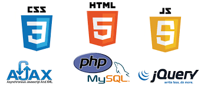

Documentación (programas, ejercicios, código útil para las prácticas) para algunos cursos sobre tecnologías web impartidos en la Escuela de Ingeniería de Telecomunicación de la Universidad Rey Juan Carlos
Aplicaciones en el servidor usando HTTP:
Aplicaciones HTML5 y similares:
Todo el código está en el repositorio CursosWeb/Code.
Código utlizado en IST-SARO e ITT-SAT:
Código utlizado en ITT-DAT e IT-AT:
Prácticas incrementales, entre los repositorios de CursosWeb en GitHub (ver detalles en el programa de cada asignatura):
Recuerda que para entregar tus prácticas tendrás que “hacer un fork” de los repositorios correspondientes, y registrar tu nombre de cuenta en Git Hub en la actividad abierta para ello en el sitio de tu asignatura en el campus virtual.
Atención: iremos poniendo más código relacionado con las prácticas durante los próximos días.
Aplicaciones en el servidor usando HTTP:
Aplicaciones HTML5 y similares:
Otros juegos de transparencias:
Atención: iremos actualizando y completando las transparencias según avanzan las asignaturas.
General:
JavaScript:
Python:
Django:
Git:
Otros:
Materiales producidos por alumnos